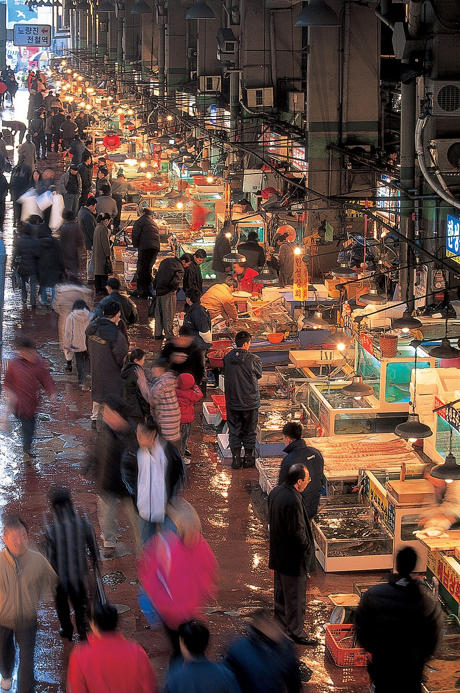
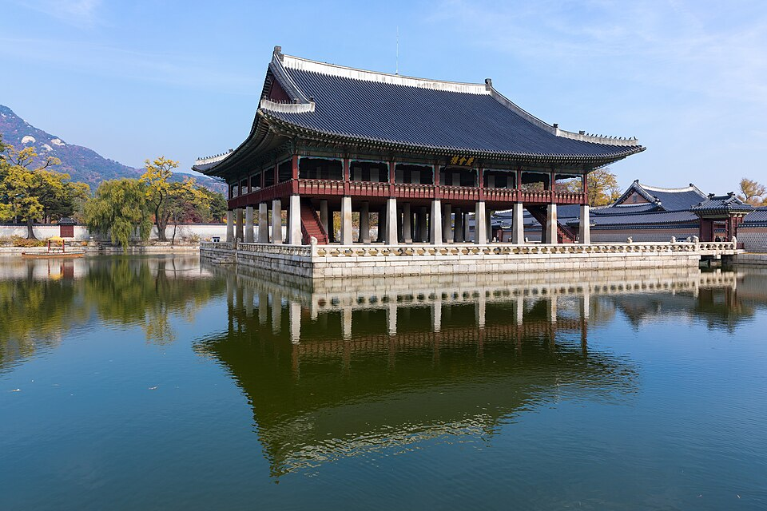
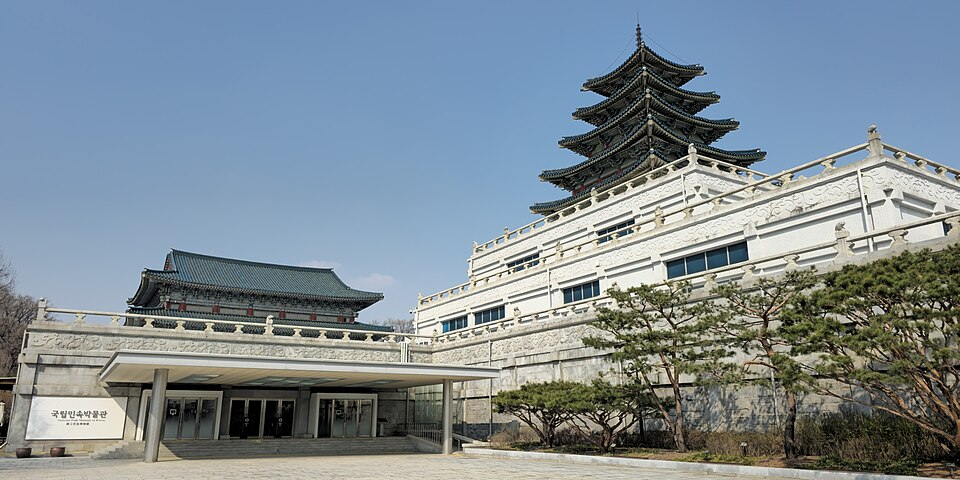
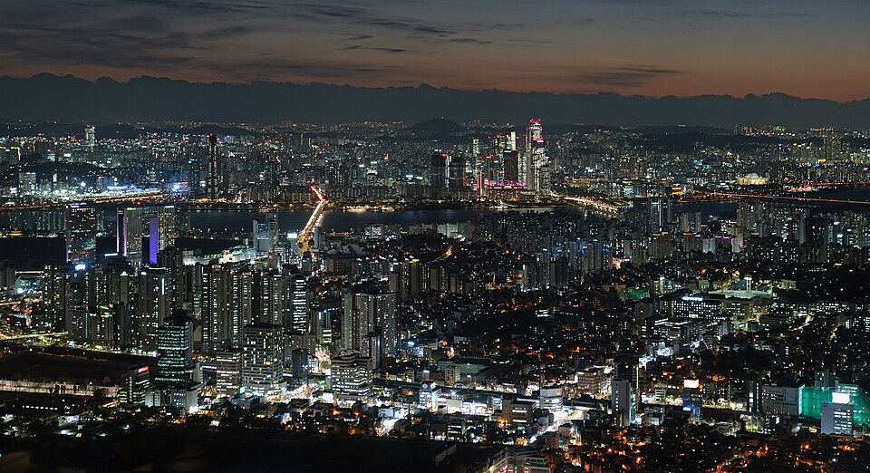

Сеул на экране: где поесть и что посмотреть — от рынка Кванджан до башни N Seoul Tower
Пиндэтток и юкхве на рынке Кванджан, сашими и рамён с морепродуктами на Норянджине, а также дворец Кёнбоккун, башня N Seoul Tower, храм Понъынса и Национальный фольклорный музей — места Сеула, которые показывали в тревел-видео и корейском шоу «Welcome, First Time in Korea?».
Сеул, каким его показывают на экране
Сеул — столица Кореи, город, где на одной карте умещаются королевские дворцы, традиционные рынки, река Ханган и сверкающие ночные виды. Местные любят самгёпсаль и копчхан, но в тревел-видео снова и снова появляются пиндэтток и юкхве с рынка Кванджан и рамён с морепродуктами с Норянджина. Ниже — подборка мест из уличных гастротуров и корейского развлекательного шоу «Welcome, First Time in Korea?» (어서와 한국은 처음이지), разделённая на еду и достопримечательности.
Где поесть
Рынок Кванджан

📍 Рынок Кванджан · Naver Map · Google Maps
Традиционный рынок, известный хрустящим пиндэттоком (оладьями из бобов мунг), юкхве (корейским тартаром из говядины) и маленькими роллами маяк кимбап. Он постоянно появляется в видео об уличной еде, например «Ultimate Seoul Street Food Tour» и «Gwangjang Market at Night – Korean Street Food Experience». В шоу «Welcome, First Time in Korea?» трое друзей из Мексики пробовали здесь живого осьминога. Чтобы почувствовать атмосферу рынка после заката, посмотрите ночные видео.
Рыбный рынок Норянджин

📍 Рыбный рынок Норянджин · Naver Map · Google Maps
Выберите морепродукты на рынке, попробуйте их в виде ассорти из сашими, а в завершение возьмите миску рамёна с морепродуктами. В шоу «Welcome, First Time in Korea?» шефы со звёздами Мишлен на рассвете ели рамён с морепродуктами, а группа поваров из Нидерландов пробовала свежее ассорти из сашими. Есть и подборка с новичками, ошеломлёнными суетой рынка, — удобный способ подготовиться к визиту.
Что посмотреть
Дворец Кёнбоккун

📍 Дворец Кёнбоккун · Naver Map · Google Maps
Дворец, который лучше всего обходить пешком в ханбоке. Видео «Walking Tour of Gyeongbokgung Palace in Full Hanbok» и «A Hanbok Day at Gyeongbokgung» показывают, как выглядит день в традиционной одежде, а большая канадская семья в шоу «Welcome, First Time in Korea?» начала отсюда своё путешествие, прежде чем отправиться на KTX в Каннын.
Национальный фольклорный музей Кореи

📍 Национальный фольклорный музей Кореи · Naver Map · Google Maps
Музей, посвящённый повседневной жизни и культуре корейцев. Если совместить его с прогулкой по дворцу, картина сеульских традиций получится полнее.
Башня N Seoul Tower

📍 Башня N Seoul Tower · Naver Map · Google Maps
Известна ночными видами на город и замками любви. В шоу «Welcome, First Time in Korea?» гости поднимались к башне на туристическом автобусе Seoul City Tour Bus, а другая компания ломала голову над автоматом по продаже замков любви.
Темплстей в храме Понъынса
📍 Темплстей в храме Понъынса · Naver Map · Google Maps
Храм в самом центре города, где можно принять участие в программе темплстей. Видео «Korean Templestay Program at Bongeunsa Temple» даёт представление о том, из чего она состоит.
Советы по маршруту
Удобный план на день: днём погуляйте по Кёнбоккуну в ханбоке и заодно зайдите в Национальный фольклорный музей, а к ужину отправляйтесь на рынок Кванджан за пиндэттоком и юкхве. Вечером завершите день ночными видами с башни N Seoul Tower. Рыбный рынок Норянджин лучше посетить отдельно рано утром — как в шоу с рамёном на рассвете, а для темплстея в Понъынса проще выделить день, который совпадает с расписанием программы.
Места из видео
- Рынок Кванджан (광장시장) Пиндэтток, юкхве, маяк кимбап Naver Map Google Maps
- Рыбный рынок Норянджин (노량진수산시장) Ассорти из сашими, рамён с морепродуктами Naver Map Google Maps
- Дворец Кёнбоккун (경복궁) Прогулка по дворцу в ханбоке Naver Map Google Maps
- Башня N Seoul Tower (Намсан) (남산서울타워) Ночные виды, замки любви Naver Map Google Maps
- Темплстей в храме Понъынса (봉은사 템플스테이) Программа темплстей Naver Map Google Maps
- Национальный фольклорный музей Кореи (국립민속박물관) Осмотр музея Naver Map Google Maps
Адреса и часы работы могут меняться — проверьте карту перед поездкой.
Похожие видео
 Ultimate Seoul Street Food Tour (Gwangjang Market)
Ultimate Seoul Street Food Tour (Gwangjang Market)
 Gwangjang Market at Night – Korean Street Food Experience
Gwangjang Market at Night – Korean Street Food Experience
 K-먹방의 성지 광장시장 – 멕시코 3인방의 산낙지 도전 (EP.2-3)
K-먹방의 성지 광장시장 – 멕시코 3인방의 산낙지 도전 (EP.2-3)
 [하이라이트] 미슐랭 셰프들도 K-라면 홀릭 – 노량진 수산시장 새벽 해물라면
[하이라이트] 미슐랭 셰프들도 K-라면 홀릭 – 노량진 수산시장 새벽 해물라면
 네덜란드 셰프들이 노량진에 떴다! 싱싱한 모듬회
네덜란드 셰프들이 노량진에 떴다! 싱싱한 모듬회
 노량진 수산시장에서 멘붕 온 외국인들 모음
노량진 수산시장에서 멘붕 온 외국인들 모음
 Walking Tour of Gyeongbokgung Palace in Full Hanbok
Walking Tour of Gyeongbokgung Palace in Full Hanbok
 A Hanbok Day at Gyeongbokgung
A Hanbok Day at Gyeongbokgung
 라망의 소원! 서울 시티투어 버스 타고 남산타워로 (EP.417)
라망의 소원! 서울 시티투어 버스 타고 남산타워로 (EP.417)
 남산타워에 놀러 간 친구들 – 자물쇠 자판기에 멘붕 (EP.238-3)
남산타워에 놀러 간 친구들 – 자물쇠 자판기에 멘붕 (EP.238-3)
 Korean Templestay Program at Bongeunsa Temple
Korean Templestay Program at Bongeunsa Temple
 [요약] 경복궁부터 KTX 타고 강릉으로 – 캐나다 다둥이 가족
[요약] 경복궁부터 KTX 타고 강릉으로 – 캐나다 다둥이 가족
Другие статьи
- Места Сеула из телешоу: Лотте уорлд тауэр на высоте 541 м и Военный мемориал Кореи
- Чоннам на экране: морская канатная дорога и остров Одондо в Ёсу
- Гайд по еде провинции Чолла-Наму: кабан-краб Ёсу, морепродукты и банчхан Мокпхо, еда Кванджу по корейским шоу
- Гид по уличной еде и рынкам Сеула: что попробовать на рынке Кванчжан, рыбном рынке Норянджин и не только (по видео с фудтуров)
- Гид по корейской косметике в Сеуле: шопинг в Olive Young в Мёндоне и Сонсу, косметологические клиники и процедуры
- Гид по корейской кухне по регионам: что поесть в Сеуле, Пусане, Чеджу, Мокпо, Тэгу, Чонджу и других городах (по популярным видео мукбанг и кулинарным роликам на YouTube)